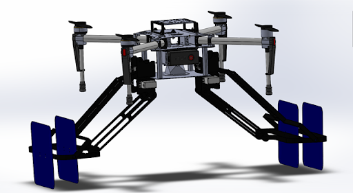
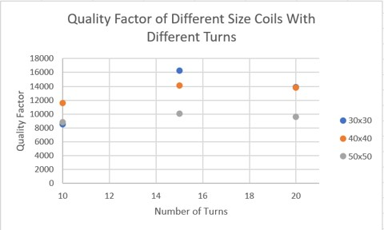

SolidWorks models of drone with coil arms that can changes
position to optimize charging
Overview:
With drone technology advancing quickly, drone applications continue
to grow. Being one of the major limiting factors, flight time should
be extended so drones can continue their mission without traditional
charging interruptions, where drones would abandon the mission and
have to land to charge. My capstone project group aimed to solve this
by providing long distance wireless charging through magnetic
resonance technology. Although the project was cut short by the
Covid-19 pandemic, we made significant progress in arranging the
schematics, simulations, and developing drone attachment designs.
My role in the project was to complete the coil simulation
and optimization.
Purpose:
Use a multiphysics simulation software (Comsol) to simulate
magnetic resonance power transfer between a transmitter and
receiver coil
Optimize coil design for long distance power transfer and use
these optimized parameters to manufacture coil
Challenges:
Learn a new software and debug simulation and provide results
within deadlines
Create a simulation that would provide accurate results, but
use assumptions that were valid
Process:
COMSOL simulations with magnetic flux density (left)
and magnetic flux vectors (right)
Coil modeled as a perfect conducting surface
Air sphere modeled encompassing the two coils and infinite
boundary conditions on the outer surface of the air sphere
Virtual circuits attached to inputs and outputs of coils
Single coil simulations to optimize coil quality factor using
coil size and coil turns as variable parameters (top figure)
Two coil simulations to optimize power transfer efficiency using
trace thickness as variable parameter in parametric sweep
(bottom figure)
Outcome:
Final optimized coil drawing with parameters

Efficiency (from COMSOL simulations) plotted against
different coil parameters
31.4 x 31.4 cm (30 + 2*trace width) coil with 11 turns as
optimal
Achieves over 40% efficiency at 30 cm between coils